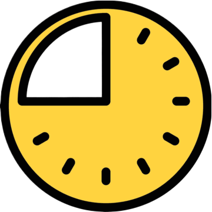

Somos un equipo de desarrolladores apasionados por crear soluciones innovadoras en el ámbito de control de aforos y calidad de servicios.
Nuestro equipo:
¡Hola! Soy Pablo, Desarrollador enfocado en crear soluciones eficientes, limpias y funcionales. Me especializo en Python y disfruto convirtiendo ideas complejas en experiencias sencillas para el usuario. Actualmente estoy trabajando en proyectos de desarrollo web frontend, aplicaciones móviles, backend y siempre busco aprender nuevas herramientas para mejorar la calidad de mi código.GitHub: ChromeTableYT
¡Hola! Me llamo Vicente 👋
Me gusta la programación y la resolución de problemas. A veces, también me gustan las matemáticas y la lógica. Me encanta aprender cómo funcionan las cosas por dentro y poner a prueba mis conocimientos. Mis áreas de mayor interés son la programación en C y java. Siempre estoy abierto a colaborar en proyectos interesantes junto a más personas, intercambiar ideas y seguir creciendo como desarrollador. GitHub: viturrxnAarón | Desarrollador de software Me apasiona resolver problemas complejos utilizando la informatica. La informatica es el fúturo y el presente, así que porque no dedicarse a ello. Entre mis conocimientos encontramos la programación en python, java, c, html y css... Utilizadas para conectarlas entre sí y resolver complejidades. Ya he trabajado en proyectos similares con otros gimnasios, como DUIN Marisma y Move and Go. 🛠️ Mi GitHub: KOKOSG7
Fitness Park es una cadena de gimnasios de origen francés fundada en 2009 que opera bajo el concepto de "fitness premium a bajo coste". Su modelo de negocio se basa en ofrecer espacios muy amplios equipados con maquinaria de musculación y cardio de alta gama, conectividad tecnológica y amplios horarios de apertura, todo ello a través de una suscripción mensual asequible. Está enfocada principalmente en un público joven y apasionado del entrenamiento de fuerza, la superación personal y la cultura del fitness.
En Solución Fitness Park, optimizamos la experiencia de entrenamiento mediante un sistema inteligente de control de aforo y tarifas dinámicas por tramos horarios. Al adaptar el precio en función de la afluencia y demanda de cada franja del día, incentivamos el uso de las horas valle con tarifas reducidas y descongestionamos las franjas de mayor concurrencia.
Esta distribución eficiente permite que los socios reserven su horario ideal para entrenar sin masificaciones ni esperas en las máquinas, pagando siempre un precio justo. Paralelamente, los gimnasios logran equilibrar el flujo de clientes, proteger la calidad de sus instalaciones y maximizar la rentabilidad operativa de sus centros a lo largo de toda la jornada.

| Tramo Horario | Franja | Precio |
|---|---|---|
| 06:00 - 10:00 | Afluencia baja | 2,50 € |
| 10:00 - 14:00 | Afluencia baja | 3,00 € |
| 14:00 - 17:00 | Afluencia media | 4,00 € |
| 17:00 - 21:30 | Afluencia alta | 5,50 € |
| 21:30 - 00:00 | Afluencia baja | 2,50 € |
El modelo de tarifas dinámicas de Solución Fitness Park organiza el día en horas valle horas medias y horas punta para equilibrar la asistencia a lo largo de toda la jornada mediante precios adaptados a cada franja horaria
Las horas de afluencia baja corresponden a las primeras horas de la mañana o el cierre nocturno donde los usuarios con horarios flexibles disfrutan del precio más bajo y de unas instalaciones despejadas sin esperas en las máquinas.
Las horas punta coinciden con el tramo de máxima demanda por la tarde aplicando una tarifa reguladora que evita la masificación del gimnasio mientras que las horas medias ofrecen un punto de equilibrio con precios intermedios durante el mediodía.